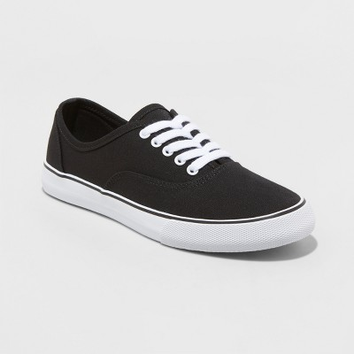
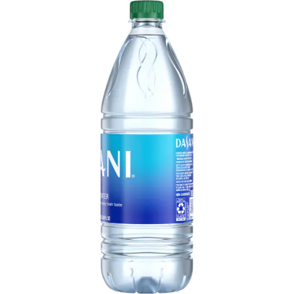
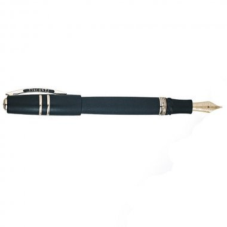
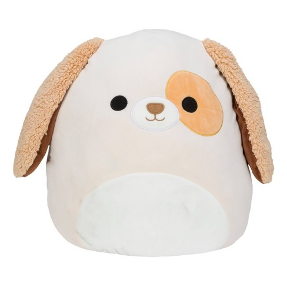

Image - 
Output on Google Lens - Women's Layla Canvas Sneakers
Output on Mobilenet Model - Running Shoes
Result - They are both correct but google lens is more precise
Image - 
Output on Google Lens - Dasani Purified Water Bottle, 1 L
Output on Mobilenet Model - Water Bottle
Result - They are both correct but google lens is more precise
Image - 
Output on Google Lens - Visconti Homo Sapiens Fountain Pen
Output on Mobilenet Model - fountain pen
Result - They are both correct but google lens is more precise
Image - 
Output on Google Lens - Eastern Yellow Robin
Output on Mobilenet Model - indigo bird
Result - Google lens was more accurate
Image - 
Output on Google Lens - Squishmellows official kellytoy plush 16" Harrison the dog
Output on Mobilenet Model - piggy bank
Result - Google lens defiently won this